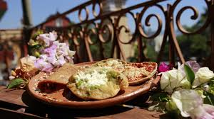

Descubre Orizaba: Un Tesoro Escondido en las Alturas
Si alguna vez has soñado con un destino que combine historia, naturaleza y cultura, entonces Orizaba es la ciudad que estabas buscando. Este mágico rincón de Veracruz es una experiencia que despierta los sentidos, con paisajes impresionantes, arquitectura colonial y una rica oferta gastronómica.

1. Teleférico de Orizaba
Uno de los atractivos más emocionantes es su teleférico, que conecta el centro de la ciudad con el Cerro del Borrego. Desde las alturas, podrás disfrutar de una vista espectacular de la ciudad y el imponente Pico de Orizaba.

2. Paseo del Río y el Ecoparque
Un recorrido relajante a la orilla del río con animales en semi-libertad, áreas de descanso y un paisaje natural que te hará olvidar el estrés. Es ideal para una caminata tranquila o un paseo en familia.

3. Palacio de Hierro
Este icónico edificio fue diseñado por Gustave Eiffel y ensamblado en Orizaba en 1894. Actualmente, alberga museos y exposiciones culturales que muestran la historia de la ciudad.

4. Pueblo Mágico con Historia
Orizaba ha sido testigo de importantes eventos históricos, reflejados en su arquitectura y museos. Explora el Exconvento de San José, la Catedral de San Miguel Arcángel y el Museo de Arte del Estado.

5. Mirador del Cerro del Borrego
Para los amantes de la aventura, este mirador ofrece una de las vistas más impresionantes de la ciudad. Además, el cerro cuenta con senderos ideales para hacer ejercicio y disfrutar del aire libre.

6. Recorrido Gastronómico
No puedes irte de Orizaba sin probar su deliciosa gastronomía. Desde tamales de anís hasta chiles en nogada, la comida local te sorprenderá. Visita los mercados y restaurantes típicos para disfrutar de una experiencia auténtica.
7. Museo Interactivo Cri-Cri
Un lugar dedicado al famoso compositor infantil Francisco Gabilondo Soler "Cri-Cri", originario de Orizaba. Ideal para los más pequeños y para quienes crecieron con sus canciones.

8. Parque Nacional Pico de Orizaba
Si eres amante de la naturaleza y el senderismo, el Pico de Orizaba te espera. Con diferentes rutas para escalar y paisajes nevados, es una aventura única para los exploradores.

¡Mira este video y descubre Orizaba!
¿Por qué visitar Orizaba?
- Cuenta con uno de los teleféricos más impresionantes de México.
- Su arquitectura colonial y su historia te transportarán en el tiempo.
- La naturaleza es protagonista con montañas, ríos y parques ecológicos.
- Es un destino accesible y con una gran oferta gastronómica.
- Su ambiente tranquilo lo hace perfecto para una escapada de fin de semana.
¡Planifica tu viaje hoy mismo! 🌎✈️
Orizaba te espera con los brazos abiertos. No importa si buscas aventura, historia o gastronomía, este Pueblo Mágico tiene algo especial para ti. ¿Qué esperas para visitarlo?